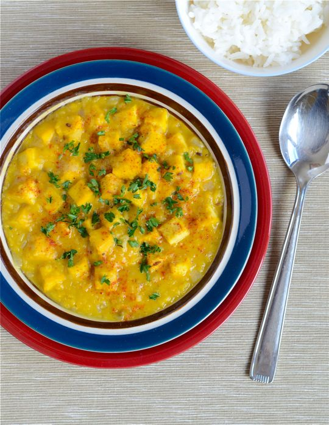

Lentil and Tofu Dahl

Description
To be clear, I hate this part of most of the recipe webpage.
No, Jennifer, I do not want to hear your life story about this
no bake cheesecake.
Anyways, if I had to say something, it would be that I wanted
to make some vegan food that was high in protein, and red lentils
stuck out as something to incorporate. I wanted to boost the protein
content even further, so I added tofu. Enjoy!
Ingredients
- 375g red lentils
- 400ml low fat coconut milk
- 400ml tinned tomatoes
- 500ml vegetable stock
- 400g brown onion
- 600g tofu
- 1 tbs garam masala
- 1 tsp tumeric
- 2 tsp chilli powder
-
lemon juice (I literally always
forget this)
Steps
- Dice onions and tofu, and place in separate bowls
-
Heat a large saucepan and add onions. Brown, occasionally
added tablespoons of water as needed.
-
Add in tofu and spices.
-
add in coconut milk, tinned tomatoes, vegetable stock.
Bring to boil, stirring frequently. Let simmer for 30 minutes
or until the lentils have absorbed most of the liquid, stirring
occasionally.
-
Realise that somewhere down the line you were meant to
to add lemon juice, but didn't.